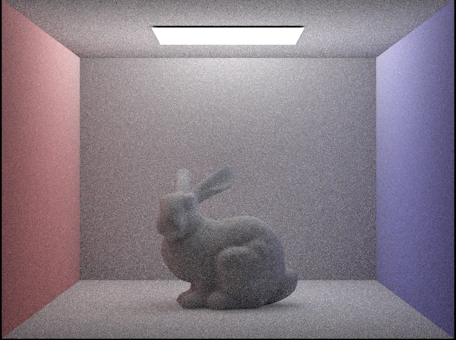

Ahmed Baqai, Dustin Luong, Ethan Chen, Jasper Chen
Title: Rendering Volumetric Scattering due to Airborne Particles
Final Demo Video
Abstract
With our project, we are attempting to replicate the effect of particulate matter in the air. The path tracer that we have developed so far mimics an actual ray of
light that travels around the scene and interacts with surfaces. We can use this to achieve the effects of a ray traveling through a medium by portraying medium particles
as tiny surfaces, however, this is computationally infeasible since we would need to compute an extreme number of interactions for each ray. As a result, rather than trying
to light scattering with a physical model, we implement volumetric scattering. The main idea behind volumetric is that rather than directly calculating each ray interaction,
we can instead model light scattering with a mathematical model. We can model new mediums as needed by adjusting various constants that dictate various properties of the medium
such as how much light is absorbed. The media doesn’t need to be air-based as we were able to render a scene that mimicked being underwater.
Technical Approach
In Project 3-1, the path tracing algorithm for one bounce radiance came in two shapes, hemisphere sampling and light importance sampling. In both of these methods, n rays were sent
out from the camera point through each pixel (n rays were used for sampling purposes). For each ray, if it intersected with an object in the scene, that point was retrieved; let’s
call it hit-point. From there, in hemisphere sampling, random rays were shot from that point in different directions sampled according to the surface's bsdf function. The irradiance
at the intersections of those rays was obtained and averaged together to get the irradiance at the original hit-point. This was then passed down to the pixel which updated its value
accordingly. For light importance sampling, a similar technique was used but instead of shooting rays in random directions from the hitpoint, they were shot to the light source: one
direction if it was a point light source or a direction to one of the sampled points of the area light. If the rays didn’t intersect any object before hitting the light, the radiance
was retrieved from the light and averaged to get the irradiance at the hitpoint.
To implement our volumetric scattering in this system, we can try the naive approach which is to create miniature surfaces that mimic medium particles and run our algorithm for multiple
bounces ensuring Russian Roulette doesn’t terminate the scheme too early. Despite this technique working, it is very costly and inefficient, instead, we turn our attention to a probabilistic
mathematical model. For a given volume in the object world, a ray will lose and gain radiance due to absorption (light converted to other energy such as heat), out scattering (light deflecting
of medium particles), in scattering (light entering our view due to deflection from other particles) and emission (we chose to exclude this as none of our target mediums provide any emission by
converting energy to a form of light; an example of an emission medium is fire). One can model the gain and loss through mathematical equations defined here in chapter four of a book on graphic
by W. Jarosz [Reference 7]. For our examples, we’ll be modeling homogenous mediums meaning that particles are diffused equally amongst the world thus our constants are truly constant and not
dependent on position/direction. As most of the equations modeling the system involve integrals, we’ll be incorporating Monte-Carlo Estimation to solve the integrals.
The main variation as described here in Section 1, 2, 3 of a paper published by uiuc [Reference 1] from the original path tracing algorithm is as follows. For hemisphere sampling, we still shoot
a ray from the camera through a pixel, and retrieve the intersection and the time of the intersection. Then, we sample a variable s according to the Poisson distribution dependent on constant k
which represents the extinction coefficient. If s > isect.t (time of intersection with object), we mark the intersection point as our hitpoint and calculate the irradiance at that point by shooting
rays in directions sampled from the bsdf (this is exactly the same as before). However, if s < t, meaning that the ray reached time s before time t, then we assume that scattering has occurred at
this point. If so, we calculate the point the ray would reach at time s and call that hitpoint. We then get the irradiance at this point using the same technique for the original hitpoint and use this to
update our pixel value. Because we are calculating multiple s’s as we render with different samples and average them down, we get smooth results with a mesh of scattering and original radiance (even though based on our laptop’s
computation speed we can’t provide too many high samples). Additionally, instead of using the bsdf sample function to get an angle, we get a random angle in the spherical hemisphere and multiply our radiance with a phase function dependent on this angle.
This phase function is dependent on the medium and weights different angles with different radiance based on the medium. The phase function used in our example was developed by Henyey and
Greenstein to model galactic dust particles and explored in this book by Pharr and Jakob [Reference 8]. The phase function can be varied to account for back scattering or forward scattering
(change in scattering direction) based on parameter g which is referenced in the results.
Now, we also have implemented a render by using light importance sampling. For this, we use the same technique as hemisphere sampling where we sample s (repeat original method if s > t) and if
s < t, we calculate our new hitpoint. However, instead of sampling a direction to shoot our rays according to the bsdf, we sample from the light source (one direction if point light, multiple
if area). Using an exponential term that incorporates distance, we were able to render hit points closer to the light brighter than hitpoints further away. This way, we used the radiance from
the rays of light to calculate our irradiance at our new hitpoint, ultimately affecting the pixel value.
Another key thing to mention is that some resources like this paper by CS at UCSD [Reference 9] indicated that better results can be achieved by modeling absorption via distances, specifically
two distances. One is the distance from our hitpoint to the light/different intersection (dependent on light importance or hemisphere sampling) and one is the distance from our eye/camera to
the hitpoint. These distances matter because light travels from the light source to a surface/hitpoint and then to the camera, and through this traveling, loses its radiance. We used an
exponential loss term to model this in some of our renders.
Problems Encountered and Tackled
In the initial weeks of this project, the main problems we encountered were that while there were several different online approaches to volumetric scattering to render participating mediums,
they went into different approaches, which at times were hard to understand. Oftentimes, they would mention several techniques - such as bidirectional path tracing - that we hadn’t learned in class
and thus not implemented in code yet, which would make it difficult to incorporate their implementation ideas into our codebase that we were building on top of in project 3-1. We decided to tackle this
problem by combining the online resources - specifically their use of phase functions to simulate direction sampling - with our own intuitive understanding of the problem. In fact, much of our breakthrough
moments came after our initial project presentation to Professor Ren and our TA, so we were proud of the end product.
Another major problem that we encountered was choosing the correct constants to render a realistic image of participating mediums. Because of how many hit points we were simulating in our
volumetric scattering approach, much of the initial light rendered in the project 3-1 renders would not appear in our participating medium renders. Online resources recommended their own
variable constants, but they were not always accurate on our own coded implementation. We tackled this problem by a lot of trial and error based on our understanding of how the constants
affect the final render, which eventually yielded images with an appropriate amount of light for realistic rendering.
The third significant problem we faced was tying up loose ends to make our renders more realistic. This included implementing light-distance consideration, which basically renders participating
medium that is closer to the light source brighter than medium that is further away. This makes the rendering more realistic since the farther you are from a light source in clouded media, the
more particles there are in the way and therefore less light is able to make it through. Additionally, we added a color aspect to our renders, which was one of the final details we aimed for
during our project proposal stage. To create our final renders, we included non-white color to the radiance term in our equations to adds an aspect of realism that can’t be captured without color.
Lessons Learned
One lesson that we learned is that it is important to fully understand the problem that we are trying to solve and to understand the concepts behind what we are implementing before we actually
start coding. What helped with this is finding and referring to multiple sources starting from the beginning. We found it extremely helpful to have and reference multiple sources ranging from
very technical papers on the math behind volumetric scattering to web books that explained the concepts at a higher level which allowed us to gain valuable intuition on the problem. In the end,
this intuition was essential to create our final coded implementation of volumetric scattering.
Another lesson that we learned is to have very clear expectations and goals that we are trying to achieve. It was also beneficial for us to have goals that we recognize are stretch goals since
they encourage us to strive for those goals and even if we don’t end up reaching them we have still reached our regular goals.
Results
In the images below, we have rendered CBbunny.dae with scattering and extinction coefficients consistent with those of water and smoke. For most of the images rendered, we used
hemisphere sampling, with a few images which are noted in the caption. We had also rendered each of these media with different values of g, the phase function. For both of these media,
the brightness of the scene appears to be at its maximum as the value of g approaches 0.5. The more the value diverges from 0.5, the scene becomes darker and darker, with values of 1 and
-1 both being completely black. In both of these scenes, the foreground is darker compared to other parts of the scene, which makes sense intuitively since the light would have to travel
through more particles to arrive at that location. Quantitatively, in our code, the distance between the light source and the foreground is larger, so the probability of light reaching that
foreground decreases much more compared to other parts of the scene.
CBbunny.dae for water, g = 0.3
CBbunny.dae for water, g = 0.45
Lower samples per pixel for water.
Scene rendered through water through colored light
When using water as a medium, the images are slightly blurred, but the scene is generally still quite bright. We can clearly identify the colors on each of the walls on the side
and can continue to see the bunny quite clearly. Of note in the images rendered through water is that the edges of the scene are illuminated much more brightly, almost as if the
edges themselves are light sources. The last rendering we have for water as a medium shows the same scene as above, but we had changed the color of the light to be a light blue.
Changing that gives the appearance that the scene is submerged in water, almost as if the camera is in a pool.
CBbunny.dae for smoke, g = 0.3
CBbunny.dae for smoke, g = 0.45
Lower samples per pixel for smoke.

Scene rendered through fog, importance sampling
Scene rendered through smoke, importance sampling
In contrast to the scene with water as a medium, the scene using fog as a medium is much darker and the bright edges in the scene are no longer visible. The shadows of the bunny also
appear visually to be similar to the foreground and it is a little difficult to distinguish between the shadow caused by the bunny and the darker foreground caused by the medium. In the
last two images we have above, we have rendered CBbunny using importance sampling through both fog and smoke. Compared to the images using hemisphere sampling, the image with importance
sampling appears to be much brighter, with less noise in the image. The scene also appears to blend together more smoothly, as there are no longer black dots on the bunny's back.
With all these renderings, it’s important to remember that we modeled homogenous mediums, meaning that the medium particles were scattered through the world uniformly. This takes away some
of the realisticness from our renders like smoke, dense fog because in the real world, you would encounter unequal distribution which would lead to much more of a contrast. Nevertheless, our
results do look very satisfying and it’d be interesting to see how we can improve this further on our own time and look into heterogeneous mediums.
Read through research papers (Reference 1,2,6,7,8,9) to clarify concepts, compare techniques, understand importance of different coefficients and phase functions,
and adapt techniques to our path tracing system developed in 3-1.
Pushed code to 3-1 that introduced two new methods: (estimate_direct_volumetric_imp and estimate_direct_lightening_volumetric) which replace estimate_direct_lighting_importance
and estimate_direct_lighting_hemisphere in one_bounce_radiance. These methods implement volumetric scattering using a combination of techniques explained in the implementation section,
specifically from References [1, 7, 8, 9].
Also wrote code to incorporate distances for absorption in implementation
Generated first few renderings for project presentations and project deliverable
Help create slides for project presentations. Created video for project presentation and final project deliverable video.
Wrote technical implementation, aided very little with abstract and result commentary.
Ethan
Ethan worked with Ahmed to discuss and draft pseudocode for the core implementation plans. From there, I coded my own implementation of the approach,
but ultimately worked with Ahmed’s code for rendering because his code was getting better results.
Ethan also reconfigured the codebase from using lighting-hemisphere to lighting-importance to add color to the renders to give a more realistic
appearance, especially for the water medium rendering.
Ethan worked with Jasper to try different environment variable constants and draft final renderings.
Jasper
Read through research papers to determine behavior of light through different media and identify different coefficients for different media.
Rendered the final images of different scenes through different media and different colors of light.
Worked on the website and final write ups.
Dustin
Searched for appropriate coefficients for different media renderings online and brute force testing.
Wrote the abstract, problems encountered, and lessons learned portion of the writeup.
Came up with explanation for the light’s behavior for the water media at the corners of the scene box.